The paper introduces a new class called Video Trimming (VT) and presents an agent-based approach
(AVT) to identify wasted footage, select valuable segments, and assemble them into a cohesive
final video.
Figure 1. A comparison between our new task and existing video tasks: (a) Highlight Detection
retrieves
clips above a saliency threshold. (b) Moment Retrieval identifies the start and end for intervals
related to a given query. (c) Video Summarization extracts keyframes for each theme of the video.
(d) Video Trimming addresses more than just a retrieval task by also filtering wasted footage and
logically composing the selected segments.
Figure 2. The overall framework of AVT. The approach first (a) converts sampled video content into
structured captions and attributes, then (b) discards defective clips, and finally (c) organizes
the remaining clips into a coherent final cut.
Abstract
As information becomes more accessible, user-generated videos are increasing in length, placing a burden
on viewers to sift through vast content for valuable insights. This trend underscores the need for an
algorithm to extract key video information efficiently. Despite significant advancements in highlight
detection, moment retrieval, and video summarization, current approaches primarily focus on selecting
specific time intervals, often overlooking the relevance between segments and the potential for segment
arranging. In this paper, we introduce a novel task called Video Trimming (VT), which focuses on
detecting wasted footage, selecting valuable segments, and composing them into a final video with a
coherent story. To address this task, we propose Agent-based Video Trimming (AVT), structured into three
phases: Video Structuring, Clip Filtering, and Story Composition. Specifically, we employ a Video
Captioning Agent to convert video slices into structured textual descriptions, a Filtering Module to
dynamically discard low-quality footage based on the structured information of each clip, and a Video
Arrangement Agent to select and compile valid clips into a coherent final narrative. For evaluation, we
develop a Video Evaluation Agent to assess trimmed videos, conducting assessments in parallel with human
evaluations. Additionally, we curate a new benchmark dataset for video trimming using raw user videos
from the internet. As a result, AVT received more favorable evaluations in user studies and demonstrated
superior mAP and precision on the YouTube Highlights, TVSum, and our own dataset for the highlight
detection task. The code and models are available at https://ylingfeng.github.io/AVT.
Visualization
Raw Video
AVT Video (ours)
UniVTG Video
UVCOM Video
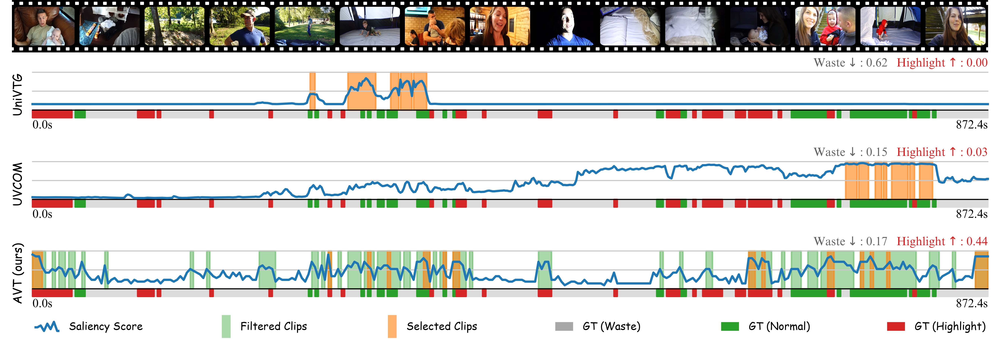
Raw Video
AVT Video (ours)
UniVTG Video
UVCOM Video
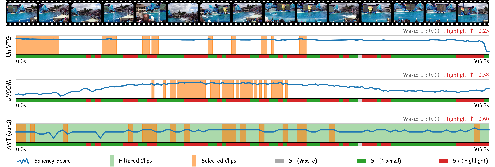
Raw Video
AVT Video (ours)
UniVTG Video
UVCOM Video
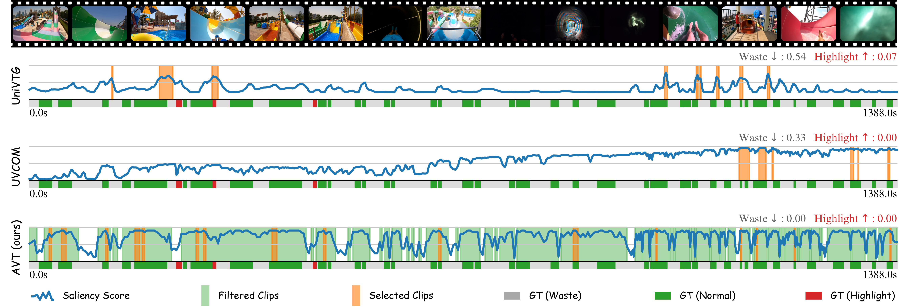
Raw Video
AVT Video (ours)
UniVTG Video
UVCOM Video
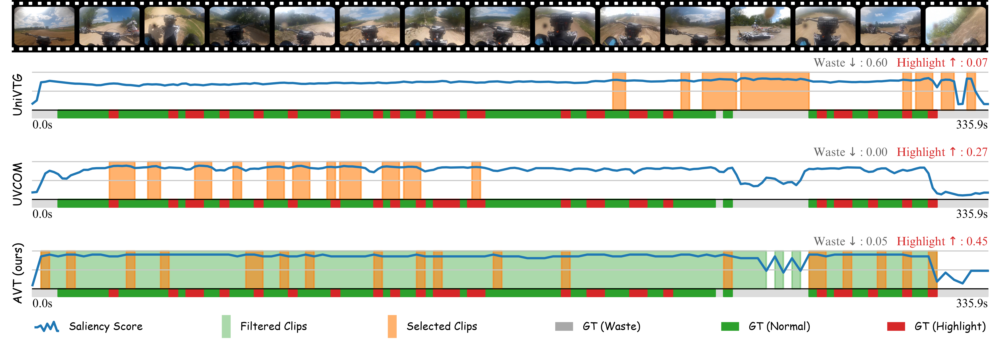
Tutorial Video
Experimental Results
User Study
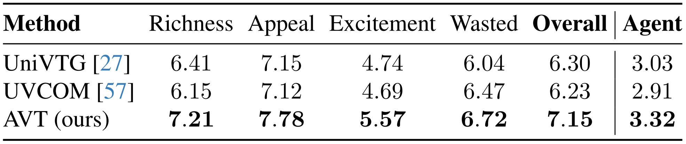
Table 1. User study through blind testing, using a scale from 1 to 10, of different methods on
the video trimming dataset, comprising 30 final cuts from 42 raw videos and involving 17
participants.
Evaluation by Agent
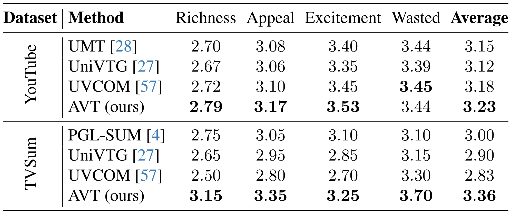
Table 2. Evaluation agent performance of different methods on the
validation set of YouTube Highlights and TVSum dataset.
Highlight Dectection
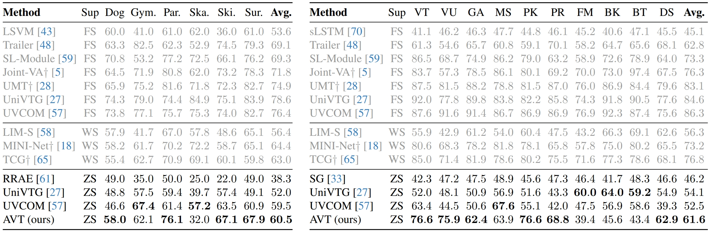
Table 3. Highlight detection results of Top-5 mAP on YouTube Highlights (left) and TVSum (right). †
denotes using audio modality. FS: Fully supervised. WS: Weakly supervised. ZS: Zero-shot.
Highlight Dectection under Various Metrics
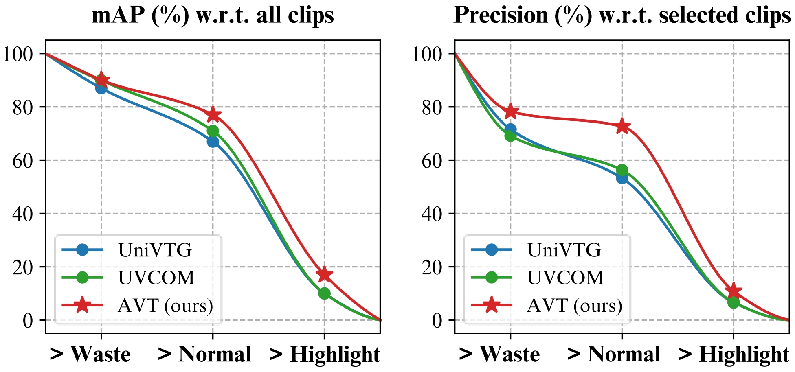
Figure 3. Highlight detection results of mAP and precision on our collected video trimming dataset.
Ablation study on Different Components
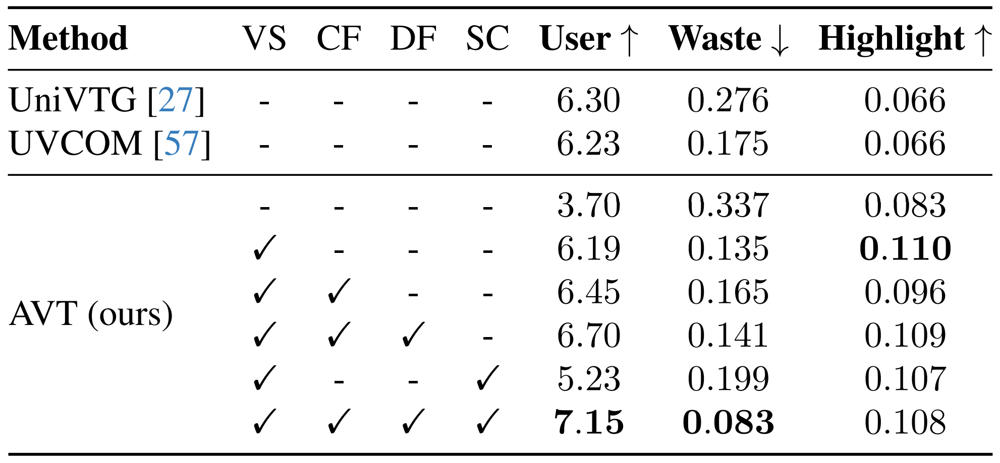
Table 4. Ablation study on the effectiveness of AVT components.
VS: Video Structuring. CF: Clip Filtering. DF: Dynamic Filter.
SC: Story Composition.
Cost on API
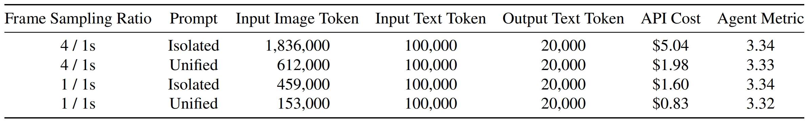
Table 5. Ablation study on the impact of sampling ratio and prompt design on performance and cost.
Refer to pricing at URL.
Fidelity
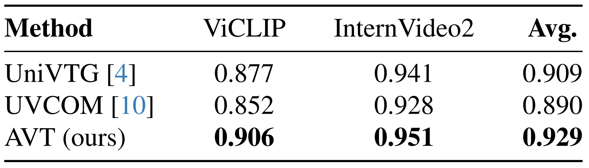
Table 6. Comparison of the fidelity between the final videos and the raw videos.
Contributions
1. We are the first to introduce Video Trimming (VT) as a novel task, which aims
to
extract key
intentions from user-captured long videos and generate concise videos with coherent narratives.
2. To establish a baseline method, we propose the Agent-based Video Trimming
(AVT)
algorithm, which
transforms video content into structured descriptions, filters wasted footage, and organizes the
selected clips into a coherent final narrative.
3. We have collected a new video trimming dataset and introduced the use of agent-assisted video
quality assessment, thus establishing a new benchmark for video trimming.
4. The AVT method demonstrates exceptional performance in both video trimming and zero-shot
highlight
detection tasks, as validated through user surveys and multiple benchmark evaluations.
BibTeX
If you find our paper or repo helpful for your research, please consider citing the following paper and
giving
this repo a star. Thank you!
@article{avt,
title={Agent-based Video Trimming},
author={Yang, Lingfeng and Chen, Zhenyuan and Li, Xiang and Jia, Peiyang and Long, Liangqu and Yang, Jian},
journal={arXiv preprint arXiv:2412.09513},
year={2024}
}